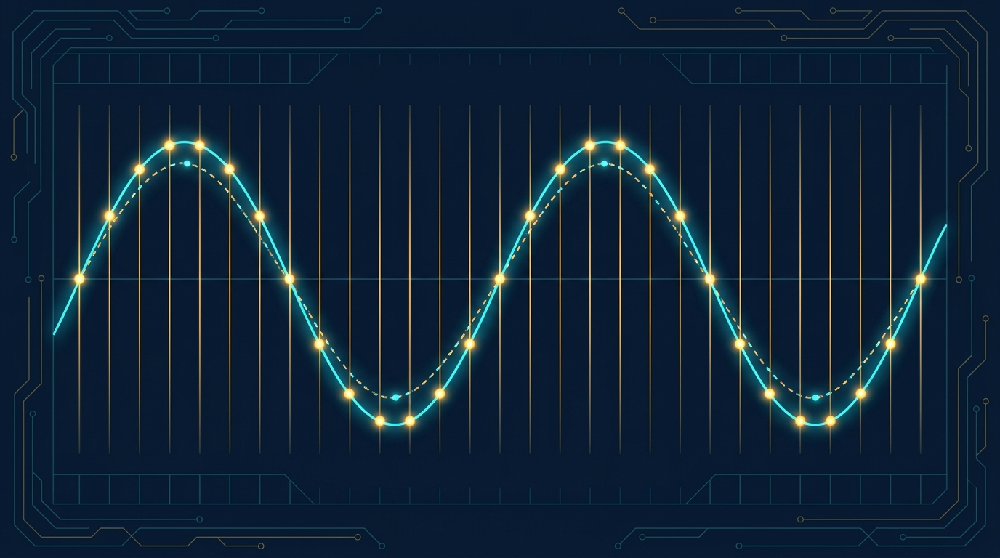
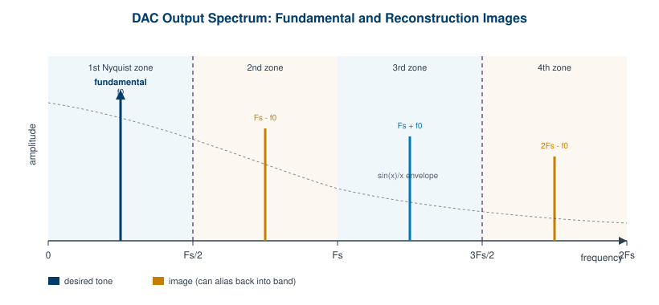
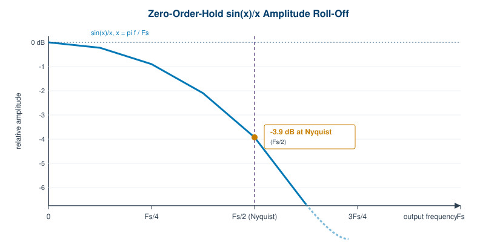

Section 2 · Designing and Generating Waveforms
Chapter 4: Sampling Theory and Signal Fidelity

The first three chapters treated the arbitrary waveform generator mostly as a black box: signal in concept, signal out at the connector. This section opens the box. Chapters 4 through 7 cover the work that turns an idea into a real output, starting with the math that governs whether the output resembles what you asked for at all.
Chapter 4 lays the foundation: sampling, aliasing, reconstruction, and quantization. These are the physics-level rules that decide how clean your signal can be and where it will fall apart. Chapter 5 moves to practice, covering how you actually build, store, and sequence waveforms in memory. Chapter 6 takes those waveforms into the field with modulation and real-world signal scenarios. Chapter 7 closes the section with triggering, synchronization, and multi-channel operation.
If you read only one chapter in this section closely, make it this one. Almost every frustrating AWG result, the mysterious spur, the amplitude that sags at high frequency, the tone that should not be there, traces back to a sampling-theory principle that was quietly violated upstream.
An arbitrary waveform generator does not draw a curve. It plays back a finite list of numbers at a fixed cadence and lets a digital-to-analog converter and an output filter do the rest. That single fact, that the signal is sampled, sets hard limits on what the instrument can and cannot reproduce. Sampling theory is not academic decoration here. It is the rulebook that tells you the highest frequency you can trust, where unwanted tones will appear, why the top of your band sags, and how much noise the finite resolution of the DAC adds to the floor.
This chapter walks through five linked ideas. Each one is a place where fidelity is won or lost: the sampling theorem itself, aliasing and spectral images, sin(x)/x reconstruction roll-off, interpolation and oversampling, and quantization noise with dither. None of it is difficult, but the consequences compound, and the engineers who get clean signals are the ones who plan around all five at once.
4.1 The Nyquist-Shannon Sampling Theorem
The Nyquist-Shannon sampling theorem states the central constraint plainly. To represent a signal without loss, you must sample at a rate strictly greater than twice the highest frequency component present in that signal. Sample at exactly twice, and you are already in trouble. Sample below it, and the lost information does not just disappear quietly. It comes back disguised as a lower frequency, which is the problem we cover in the next section.
For an AWG, the sample clock is the term that matters. If the instrument updates its DAC at a sample rate of Fs, then the Nyquist frequency is Fs/2, and that is the theoretical ceiling on any frequency component in the waveform you generate. A 1.25 GS/s generator has a Nyquist frequency of 625 MHz. You cannot produce a clean 700 MHz tone from it, no matter how the waveform is defined, because there is no way to represent that tone in the sample stream.
The theoretical limit is not the practical limit. Pushing a signal right up to Fs/2 looks fine on paper and behaves badly in hardware. Reconstruction filters are not brick walls, the sin(x)/x roll-off (section 4.3) eats your amplitude as you approach Nyquist, and images sit dangerously close to the band edge. The working rule among practicing engineers is to keep the highest frequency component well below Fs/2, often at or under Fs/2.5 to Fs/3 for signals where shape and spectral purity matter.
| Highest signal frequency | As a fraction of Fs | Practical verdict |
|---|---|---|
| 0.50 × Fs | At Nyquist | Theoretical limit only. Do not design here. |
| 0.45 × Fs | Just under Nyquist | Aggressive. Needs a sharp filter and sinc correction. |
| 0.40 × Fs | Comfortable margin | Common upper bound for clean single tones. |
| 0.33 × Fs | Roughly Fs/3 | Safe for complex and modulated waveforms. |
| 0.20 × Fs | Heavy oversampling | Easy filtering, low images, best fidelity. |
Engineer's corner. The sampling theorem assumes the signal is band-limited before it is sampled. Inside an AWG you control the source waveform, so band-limiting is your responsibility, not the instrument's. If you define an ideal square wave with infinitely sharp edges and play it near Nyquist, you are asking for harmonics that physically cannot exist below
Fs/2. They will fold back as aliases. Band-limit the math, not just the hardware.
4.2 Aliasing, Images, and the Nyquist Zones
Sampling is periodic, and periodicity in time produces repetition in frequency. When the DAC reconstructs your waveform, it does not produce a single clean copy of the spectrum. It produces that spectrum plus mirror copies, called images, repeated around every integer multiple of the sample rate: around Fs, 2Fs, 3Fs, and so on. The fundamental you wanted lives in the first Nyquist zone, from DC to Fs/2. The images live in the zones above it.

Images are not aliases, but they become aliases when they fold. An image sitting up near Fs is harmless if your reconstruction filter removes it and your application never looks that high. The danger appears when a frequency component lands above Fs/2 in the original waveform. There is no room for it in the first Nyquist zone, so it folds back, mirrored around Fs/2, and lands at a lower frequency where it masquerades as a legitimate tone. A 600 MHz component on an 1000 MS/s generator does not appear at 600 MHz. It aliases to 400 MHz, and no filter downstream can separate it from a real 400 MHz signal, because by then they are indistinguishable.
Two defenses matter. The first is a reconstruction filter, an analog low-pass filter on the DAC output that passes the first Nyquist zone and rejects the images above it. The sharper this filter, the closer to Nyquist you can work, but sharp filters add cost, group-delay ripple, and phase distortion. The second defense is frequency planning: choosing a sample rate so that the tones you care about, and any images or aliases they generate, fall where the filter can deal with them. On wideband instruments engineers sometimes deliberately operate in a higher Nyquist zone, using an image as the output of interest, but that is an advanced tactic and demands careful filtering.
Pro tip. When a spur appears at a frequency you cannot explain, check whether it is an alias before you chase it through the hardware. Compute
Fs minus your toneand2Fs minus your tone. If the mystery spur matches one of those, you have a folding problem upstream, not a defective output stage. Raising the sample rate or band-limiting the source waveform usually makes it vanish.
4.3 Reconstruction and the sin(x)/x Roll-off
A practical DAC does not output mathematical impulses. It holds each sample value steady until the next clock edge, producing the familiar staircase output. That hold operation, called a zero-order hold, is convenient to build and has one unavoidable side effect: it shapes the spectrum with a sin(x)/x envelope, also written as a sinc function. Low frequencies pass at nearly full amplitude. As you climb toward Nyquist, the envelope rolls the amplitude down.

The number to remember is -3.9 dB. At the Nyquist frequency, Fs/2, the zero-order hold has attenuated your signal by about 3.9 dB relative to DC. That is roughly a 36 percent amplitude loss, and it is not a defect. It is the cost of holding samples. The roll-off is gradual and predictable: a few tenths of a dB in the lower part of the band, climbing steeply as you near Nyquist, and reaching a complete null at Fs itself. This is also why working at, say, 0.4 × Fs is so much kinder than working at 0.48 × Fs. The penalty rises fast near the edge.
The fix is sinc correction, sometimes called inverse-sinc or pre-emphasis filtering. You apply a filter, in the digital domain before the DAC or in an analog equalizer after it, whose response is the inverse of the sinc curve. It boosts the high end by exactly the amount the zero-order hold will cut, so the net response across the band stays flat. Many modern AWGs include selectable sinc correction. The tradeoff is that boosting the high end also lifts high-frequency noise and consumes a little dynamic range, so it is worth enabling when flatness matters and leaving off when it does not.
| Output frequency | sin(x)/x amplitude | Approx. attenuation |
|---|---|---|
| 0.1 × Fs | 0.984 | -0.14 dB |
| 0.2 × Fs | 0.935 | -0.58 dB |
| 0.3 × Fs | 0.858 | -1.33 dB |
| 0.4 × Fs | 0.757 | -2.42 dB |
| 0.5 × Fs (Nyquist) | 0.637 | -3.92 dB |
4.4 Interpolation and Oversampling
If working near Nyquist is the source of so much grief, the obvious remedy is to move Nyquist further away. Oversampling does exactly that. You run the DAC faster than the signal strictly requires, which lifts Fs/2 well above your highest frequency component and gives every downstream stage more room to work.
Oversampling buys margin on three fronts at once. First, it pushes the spectral images higher in frequency, away from the band of interest, so the reconstruction filter has a wide transition region to roll off in. A gentle, cheap filter with good phase behavior can replace a sharp, expensive one. Second, it moves your signal down the sin(x)/x curve toward the flat region, cutting the roll-off penalty. A tone at 0.4 × Fs loses 2.4 dB; the same tone at 0.1 × Fs loses less than 0.2 dB. Third, it spreads quantization noise across a wider bandwidth, which lowers the noise density inside your band of interest.
Digital interpolation is the technique that raises the effective update rate without forcing you to author every sample by hand. The instrument takes your lower-rate sample stream and computes intermediate samples with a digital filter, presenting a higher-rate stream to the DAC. The original waveform is preserved, the images move up, and the analog filter relaxes. This is why many high-speed converters integrate 2x, 4x, or 8x interpolators on chip.
The tradeoffs are real and worth naming. Running the DAC faster consumes memory if you store samples at the higher rate, and it consumes compute and power in the interpolation filter and the converter itself. There is also a point of diminishing returns: once your images are comfortably out of band and the roll-off is negligible, more oversampling mostly adds cost. The art is matching the oversampling ratio to what the signal and the filter actually need.
| Oversampling ratio | Image separation | Filter demand | Cost |
|---|---|---|---|
| 1x (Nyquist-rate) | Images crowd the band edge | Very sharp filter required | Lowest memory, hardest analog |
| 2x | First image near Fs | Moderate filter | Balanced, common default |
| 4x | Images well separated | Gentle filter | More memory and compute |
| 8x and up | Images far out of band | Minimal filtering | Highest memory, power, and cost |
4.5 Quantization Noise and Dither
Sampling deals with time. Quantization deals with amplitude. A DAC has a finite number of output levels, set by its vertical resolution: an N-bit converter offers 2 to the N distinct levels. Every sample must snap to the nearest available level, and the small rounding error left over is quantization error. Across a signal it behaves like added noise, the quantization noise that sets the converter's ideal noise floor.
The familiar rule of thumb is that an ideal converter delivers roughly 6.02 dB of signal-to-noise ratio per bit, plus about 1.76 dB. A perfect 14-bit DAC tops out near 86 dB SNR; a 16-bit DAC near 98 dB. Real converters fall short of the ideal, but the lesson holds: more bits means a lower noise floor and more headroom for small signals riding on large ones.
Quantization noise is not always benign noise. When the input is a simple, periodic waveform whose period lines up neatly with the sample grid, the rounding errors stop being random. They become periodic too, and periodic error produces discrete spectral spurs rather than a smooth floor. These spurs can be more damaging than broadband noise because they concentrate energy at specific frequencies, which is exactly where a sensitive measurement or a clean carrier cannot tolerate them. This shows up directly in the spurious-free dynamic range, the SFDR spec covered in Chapter 3.
Dither is the standard cure. You deliberately add a small amount of random noise to the signal before quantization. That randomness breaks the correlation between the signal and the rounding error, so the energy that would have piled up into discrete spurs spreads out into a smooth, benign noise floor instead. You trade a slightly higher broadband noise level for the disappearance of the spurs, and in most spectral-purity-sensitive applications that is a trade worth making. The dither amplitude is typically a fraction of one LSB to a few LSBs, just enough to randomize without meaningfully raising the floor.
Engineer's corner. Dither and sinc correction pull in different directions, so set them with intent. Sinc correction boosts high-frequency content, which can lift the noise floor near the band edge; dither raises the floor everywhere by design. If your application lives or dies by a single clean carrier, favor low spurs (dither on) and accept the marginally higher floor. If you need flat broadband amplitude, favor sinc correction and watch the SFDR. Few signals need both pushed to the maximum at once.
Put the five ideas together and a working discipline emerges. Keep your highest frequency well under Fs/2. Plan the spectrum so images and aliases land where a filter can reject them. Expect and correct the sin(x)/x roll-off. Oversample enough to relax the analog filter without wasting memory. Choose resolution and dither to keep the noise floor and spurs below what your application can tolerate. Do that, and the output at the connector will look like the waveform you imagined. Skip any one of them, and sampling theory will remind you which one you skipped.
As always, confirm the sample rate, resolution, and reconstruction-filter behavior of any specific instrument against its current datasheet at berkeleynucleonics.com before you design around them.
Check Your Understanding
Five quick questions on this chapter. Your answers save on this device.